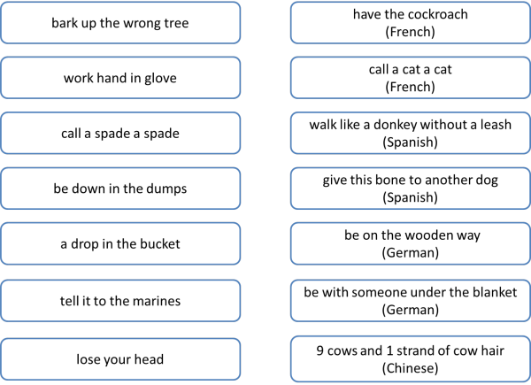

Idioms: the essentials
 |
 |
| bite the bullet | let the cat out of the bag |
What are idioms?
Idioms are expressions whose meaning is not apparent from the
meanings of the individual words. For example, the two idioms
above mean respectively to suffer something unpleasant but unavoidable
and to betray a secret.
They mean these things because speakers of English agree that they do.
The origins of many idioms are often obscure and debated.
All languages contain very large numbers of idioms (one estimate for
English puts the figure at 25,000) and they are
troublesome for learners for three reasons:
- You can't figure out what they mean even if you understand all
the words individually.
You may understand he's pulling your leg to mean that someone is playing a joke on you by telling a lie but you can't extract that meaning by understanding the verb and the noun. - You can't usually change the order of the words, leave any out
or insert other words so you have to learn the whole chunk as a
single item.
You can't say release the cat from the bag or let the lion out of the bag and expect the meaning to remain. You also can't usually say something like let the cat out or let the tortoiseshell cat out of the bag and retain the meaning of the idiom. - Idioms rarely if ever translate word-by-word from language to language. You may think that let the cat out of the bag is easy enough to understand but if you translate it into another language it is usually meaningless or will be taken literally. The idea will usually translate but not the words themselves.
 |
Opacity |
The first of these problems is sometimes referred to
as opacity. Some idioms are more opaque than others, however.
Which of the following are the easiest to understand for a non-native
speaker of English?
Click here when you have an answer.
- a can of worms
- a drop in the ocean
- a piece of cake
- a back-seat driver
- find your feet
- in the heat of the moment
- kick the bucket
- smell something fishy
Some comments:
There's no right answer here because we all have different ways
of seeing the world, but:
a, c, e and
g are almost wholly opaque. Even if you have some
context to help, it is unlikely that you can guess the meaning.
For example:
You've opened up a new can of worms
I'll do it; it's a piece of cake
You'll soon find your feet
He kicked the bucket last year
all have some context but the meaning remains obscure.
b, d, f and h are, however, less difficult to
understand. For example:
The money's a drop in the ocean
He's a terrible back-seat driver
She hit him in the heat of the moment
I smell something fishy about him
have no more context than the examples above.
However, it isn't a huge leap of imagination to understand
that a drop in the ocean
means a comparatively and inadequately very small quantity, that
a back-seat driver
is a passenger who advises unhelpfully,
that the heat of the moment
means during an exciting event / emotional time or that
smelling something fishy
means being suspicious. Very little context is needed to
make a good guess.
 |
Fixedness |
The second problem above is the extent of fixedness, i.e., how much
the idiom may be changed without losing the meaning. Which of the
following are completely fixed and which allow some room for innovation?
Click here when you have an answer.
- throw in the towel
- smell a rat
- under the weather
- on tenterhooks
- hale and hearty
- out and about
- use your loaf
Some comments:
a and b can be slightly changed only. Because they are verb phrases, we
can change the tense of the verb (smelt a rat, will throw in the towel etc.) and
it's just possible to insert an adjective into one of them (smell a big rat) and
the towel can be replaced with the sponge but still keep the meaning.
All the rest are completely fixed. It's very unusual to insert any words
into any of them, to change any of the words or to leave words out. You
can't have:
*under the climate
*on fish hooks
*hale and healthy
*out and around
*use your bread
with anything like the same meaning.
e and f, by the way, are called binomials and English has hundreds of these
mini-idioms which are remembered, used and perceived as single items:
sooner or later,
helter-skelter, take it or leave it,
seek and destroy,
willy-nilly, short and sweet,
sick and tired etc.
 |
Style |
Most idiomatic language is stylistically informal and
inappropriate in a number of situations. They are used
extensively in informal speech and writing (especially in
newspapers), however, so a knowledge of common ones is very helpful
for learners of English. Unfortunately, there are, by some
estimates, 25,000 of them in English.
In more formal contexts, idioms will often be avoided so we are
unlikely to find, for example:
Buckingham Palace announced that the Queen is under the weather
The government negotiators are reluctant to open a can of worms,
said the White House spokesman.
etc.
It is important to make sure, then, that idiom presentation is set
in an appropriately informal context.
Translatability |
As we noted above, idioms (and binomials in particular) very rarely translate exactly but it is interesting (to some) that the notions and ideas they contain do translate, albeit with different words. Here are some examples for fun. Can you match the English idioms on the left to their equivalents in other languages on the right? Click on the image when you have an answer.

 |
Teaching idioms |
There's nothing mysterious about teaching idioms. Treat them as
single items of vocabulary (lexical chunks) and teach them the same way
you teach any other vocabulary items. See
the guide to teaching
vocabulary for some ideas and more.
But bear style in mind and do not try to present idioms in inappropriate
contexts or texts. Idiomatic expressions are very frequently used
in newspaper headlines and that is a good source of exemplification.
In the section for learners on this site, there are some exercises to do with idioms and binomials. Check the exercise index under vocabulary for more.
There is a more complete and more technical guide to idiomaticity in the in-service section of the site which repeats much of the above adding detail and lots of terminology.